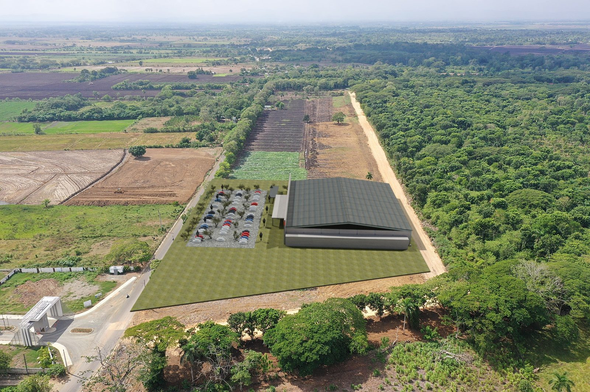
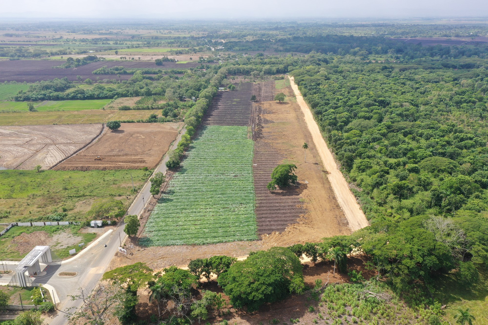
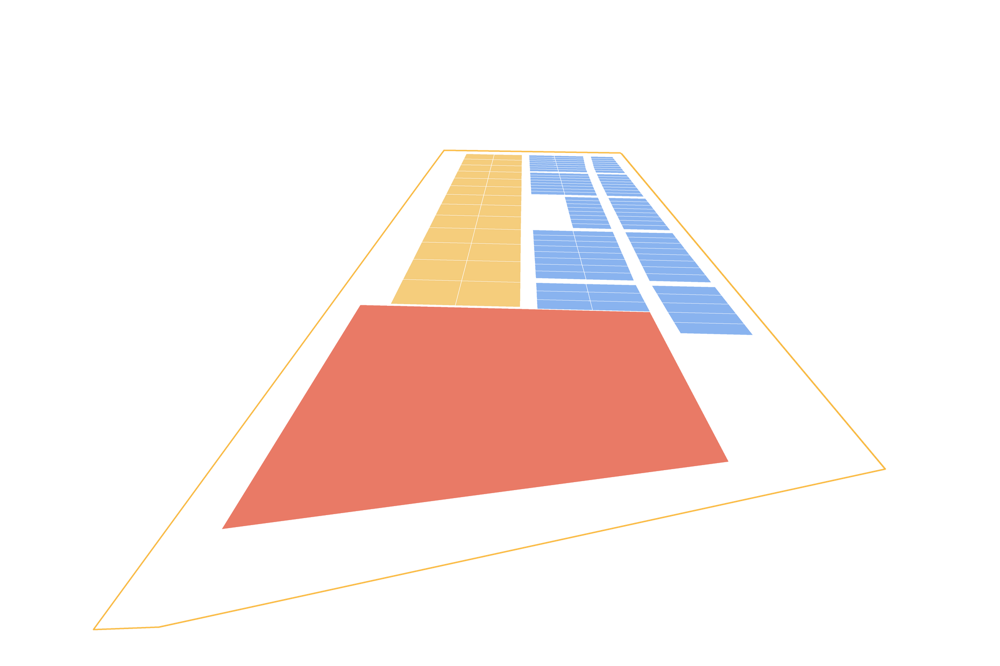
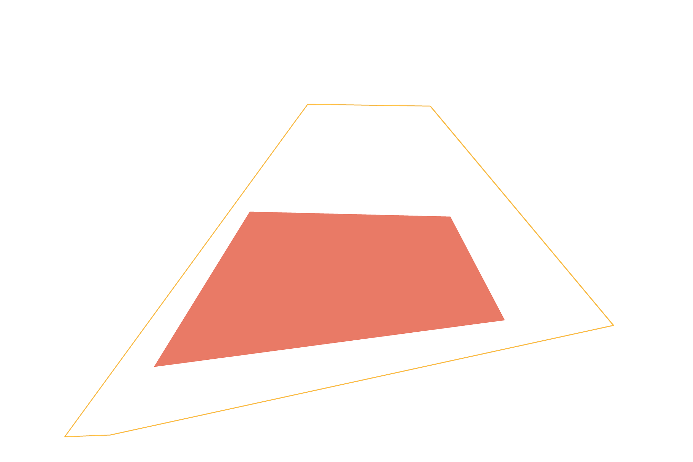

La distribución del proyecto montada sobre el terreno real, con las calles de la ciudad y las rutas en carro a los lugares que vas a usar todos los días.
Tu navegador no muestra 3D. Mira el plano sobre el terreno más abajo.
Arrastra para girar · toca un solar para ver su área
1 de 4
Entre la ciudad y el campo
145 mil m² en la carretera Las Cejas–La Enea, con el bosque detrás y la ciudad a unos minutos. En la entrada, un solar comercial de 21,727 m²; a lo largo del lado este, 26 solares mixtos de 1,220 m²; detrás, 99 solares residenciales.
2 de 4
Así se levantaría la plaza comercial
Un solar de 21,727 m² en la entrada, con 179.5 m de frente a la carretera por el lado este. Encima, una nave de supermercado de una planta como las de las grandes cadenas del país: 5,600 m² bajo techo, locales en línea, marquesina y parqueo para unos 100 carros. A menos de 300 m pasa la nueva Circunvalación.
Ilustración de la forma, no un diseño: la nave, el parqueo y las fases son orientativos.
3 de 4
Cerca de lo que usas cada día
Rutas reales en carro desde la entrada, por las vías que ya están abiertas. Toca un lugar para verlo en la maqueta.
Rutas calculadas con OSRM sobre OpenStreetMap el 22/09/2026. El tiempo real depende del tráfico.
4 de 4
Detrás, la vida de barrio
99 solares residenciales de 342 a 455 m² en cinco manzanas, y 26 solares mixtos de 1,220 m² en la franja este, para comercio o vivienda. Toca cualquier solar en la maqueta para ver su número y su área.
9,8 km de vía nueva por el sur de la ciudad, de cuatro carriles. En enero de 2026 Obras Públicas reportaba un 80 % de avance.
Frente comercial sobre la carretera
Un solar comercial de 21,727 m² en la entrada, con 179.5 m de frente a la carretera Las Cejas–La Enea.
El comercio ya llegó a la zona
En 2022 el Ayuntamiento aprobó 15,000 m² para Supermercados Bravo en Terranova, sobre la ruta a Santo Domingo. Hoy queda a 10 minutos en carro.
A 10 minutos del centro
Parque Duarte, Yoma, La Sirena, el hospital San Vicente de Paúl y la UASD, entre 10 y 13 minutos por las vías que ya están abiertas.
El camino
De la ciudad al terreno, en vídeo 4K
Tomas de dron del recorrido desde San Francisco de Macorís hasta El Pozo.
La ciudadBarrios de San Francisco de Macorís, al salir hacia el proyecto.El caminoVía de cuatro carriles en el trayecto desde la ciudad.La llegadaEl terreno entre el bosque y la carretera.El terrenoLa franja desbrozada vista desde el norte.El entornoLlano, con la cordillera al fondo.El accesoCalle asfaltada y arbolada hacia la entrada.
Así se vería
La plaza sobre las fotos reales del terreno
Render fotorrealista de la plaza comercial en el solar del DXF, montado sobre las fotos de dron con la cámara de cada toma (posición, altura y rumbo del dron, afinados con puntos del suelo). Arrastra la línea para comparar con el terreno de hoy o recorre la obra fase por fase.

⇆
HoyPropuesta
Render ilustrativo (Blender, Cycles) con texturas y cielo de Poly Haven. La nave muestra la forma de una tienda de supermercado de una planta, no es un diseño arquitectónico.
Cuadro de áreas
Así se reparte el terreno
Áreas medidas sobre la distribución en DXF (UTM 19N) de septiembre de 2026.
92,456 m² vendibles en 126 solares, de 145,232 m² de terreno: el 64 %.
El plano de junio de 2026 repartía 129,644.58 m². La distribución nueva sustituye su zona comercial, su plaza y sus apartamentos por un solo solar comercial en la entrada y la franja de mixtos.
El terreno
Así queda el plano sobre el terreno
La distribución del DXF sobre la ortofoto del vuelo (4 cm por píxel) y sobre las fotos de dron, cada una con la posición, la altura y el rumbo de su cámara. En rojo, el solar comercial de 21,727 m²; en amarillo, los mixtos junto a la carretera. El terreno es llano: en el solar comercial el suelo varía 2 m de punta a punta.



Zona comercialMixtoResidencial
Zona comercial
Un solar comercial de 21,727 m²
Un trapecio de 144.2 × 179.5 × 135.5 × 137.9 mEn la entrada del proyecto, de la calle de tierra del oeste hasta la carretera; no cruza la calle.
179.5 m de frente a la carreteraTodo el lado este da a la carretera Las Cejas–La Enea.
A menos de 300 m de la CircunvalaciónLa vía nueva de 9,8 km que rodea la ciudad por el sur.
Para una nave de supermercadoCaben 5,600 m² bajo techo, locales en línea y parqueo. Como referencia, el Merca Jumbo abierto en Las Terrenas en 2026 tiene 3,800 m² de construcción y 200 parqueos.
Toca el solar para ver su ficha.
Residencial
Detrás, la parte residencial
99solares residenciales, de 342 a 455 m²
26solares mixtos de 1,220 m², comercio o vivienda
92,456 m²vendibles en total
Ver las áreas de los 26 mixtos y los 99 residenciales
Recorrido 360
Párate sobre el terreno
Tres fotos 360 del dron, a 71–77 m sobre el proyecto, con la distribución dibujada en el suelo en su sitio. Arrastra para mirar alrededor y toca «Ir a» para moverte de un punto a otro.
El proyecto está en anteproyecto. Las áreas de esta presentación salen de la distribución en DXF; precios y condiciones se definen en la etapa siguiente.
UbicaciónCarretera Las Cejas–La Enea, San Francisco de Macorís
Terreno145,232 m², 92,456 m² vendibles
Solares1 comercial de 21,727 m², 26 mixtos de 1,220 m² y 99 residenciales